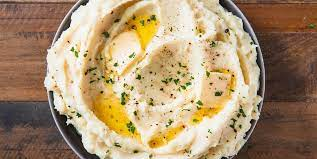

Mashed Potatoes

Description
The beautiful homemade mashed potatoes has been a classic in homes since the 1600s(Supposedly). Simple recipe, simple to make, simply good food. All you need are a bunch of potatoes, milk, butter,a pot of boiling water and you're set!
Ingridients
- 1lb of peeled potatoes
- Milk
- 1 stick of butter
- Salt
- Pepper
- Pot of boiling water
Steps
- Salt a large pot of water
- Bring that pot of water to a boil
- While the pot of heating up peel your 1lb of potatoes
- Cut the potatoes in half's and then into quarters
- Put potatoes into pot of boiling water
- Let potatoes boil for 20-30 minutes
- Once potatoes are soft drain the pot of potatoes
- Cut up your stick of butter and place in with potatoes
- Start mashing
- After your potatoes are mashed up a bit add milk to smooth the potatoes
- Keep mashing until desired texture
- Add pepper and enjoy